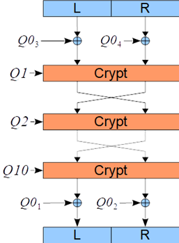
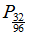
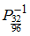
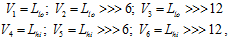
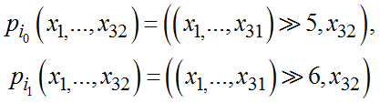
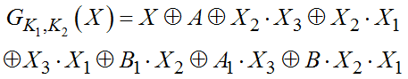
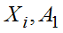
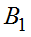
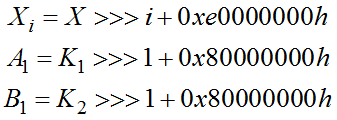
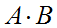

4.2.4. Пример блочного шифра на основе управляемых операций
4.2.4. Пример блочного шифра на основе управляемых операций
В качестве примера рассмотрим блочный шифр COBRA-H64, построенный на основе управляемых операций. Этот блочный шифр имеет размер блока равный 64 бита, размер ключа в 128 бит и состоит из 10 одинаковых раундов, а также начального и конечного преобразования (рис. 4.15).
 |
Рис. 4.15. Общая схема шифра COBRA-H64 |
Опустим при рассмотрении схему расширения ключа, она дает на выходе 10 подключей размера 128 бит и может быть найдена в соответствующей литературе. Исходя из схемы шифра очевидно, что по 2 ключа используют начальное и конечное преобразование и один ключ использует каждый раунд. После раундовой функции подблоки L и R меняются местами.
Раундовая функция использует следующие операции:
• и  − это рассмотренные ранее прямая и обратная перестановки, первый из них используется в прямом направлении, второй в обратном;
• Операция E − это расширение подблока из 32 бит до 96 бит, выдает 6 переменных по 16 бит:

где >>> это операция циклического сдвига вправо;
• Pi – переключаемая перестановка с минимальным входом, описывается как
,
т. е. первые 31 бит циклически сдвигаются на разное число бит и к ним присоединяется 32-й бит;
• I – фиксированная перестановка;
• Нелинейные операции G1 и G2, являются одинаковыми и определяются как
,
где значения X − это вход, A − первый управляющий вход и B − второй управляющий вход. Значения  и вычисляются как
,
операция  − это поразрядное умножение (операция И).
Управляемые шифры с использованием двухместных примитивов с минимальным управляющим входом больше подходят для аппаратной реализации, так как они сложны в программной реализации. Желательно, при создании шифра с использованием управляемых операций, использовать в его составе и проверенные высоконелинейные операции, например, подстановки размерности 8 бит или операции сложения по модулю  , что позволит повысить общую нелинейность выходных данных блочного шифра.
, что позволит повысить общую нелинейность выходных данных блочного шифра.